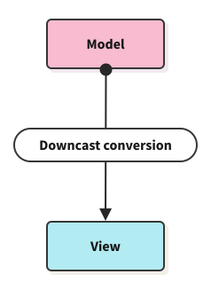
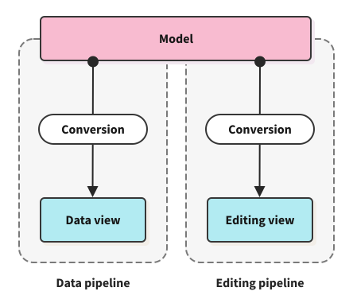

Downcast conversion – model to view
The process of converting the model to the view is called a downcast.

The downcast process happens every time a model node or attribute needs to be converted into a view node or attribute.
The editor engine runs the conversion process and uses converters registered by the plugins.
To tell the engine how to convert a specific model element into a view element, you need to register a downcast converter by using the editor.conversion.for( 'downcast' ) method, listing the elements that should be converted in the process:
editor.conversion
.for( 'downcast' )
.elementToElement( {
model: 'paragraph',
view: 'p'
} );The above converter will handle the conversion of every <paragraph> model element into a <p> view element. You can see the input and output in the snippet below.
This is just an example. In fact, paragraph support is already provided by the paragraph plugin so you do not really need to write your own <paragraph> element to <p> element conversion.
You just learned about the elementToElement() downcast conversion helper method! More helpers are documented in the following chapters.
The CKEditor 5 engine uses two different views: the data view and the editing view.
The data view is used when generating the editor output. This process is controlled by the data pipeline.
The editing view, on the other hand, is what you see when you open the editor. This is controlled by the editing pipeline.

The simple code example presented before registers a converter for both of these pipelines at once. It means that a <paragraph> model element will be converted to a <p> view element in both the data view and the editing view all the same.
Sometimes you may want to alter the converter logic for a specific pipeline. For example, in the editing view you may want to add some additional class to the view element. This kind of operation requires setting separate converters for both views, unlike the previous example where one, general downcast was set up.
// dataDowncast for data pipeline
editor.conversion
.for( 'dataDowncast' )
.elementToElement( {
model: 'paragraph',
view: 'p'
} );
// editingDowncast for editing pipeline
editor.conversion
.for( 'editingDowncast' )
.elementToElement( {
model: 'paragraph',
view: {
name: 'p',
classes: 'paragraph-in-editing-view'
}
} );As you should already know from the chapter about the model, an attribute may be applied to a model text node.
Such text node attributes may be converted into view elements.
To do so, you can register a converter by using the attributeToElement() conversion helper:
editor.conversion
.for( 'downcast' )
.attributeToElement( {
model: 'bold',
view: 'strong'
} );The above converter will handle the conversion of every bold model text node attribute to a <strong> view element, as shown in the snippet below.
Text in bold
Again, this is just an example for the sake of simplicity. Bold support is actually provided by the basic styles plugin so you do not have to write your own bold attribute to strong element conversion.
Similar to the previous example, you can convert a <heading> model element into an <h1> view element with the use of the elementToElement() conversion helper. A code to achieve it would look like this:
editor.conversion
.for( 'downcast' )
.elementToElement( {
model: 'heading',
view: 'h1'
} );Which is equivalent to:
editor.conversion
.for( 'downcast' )
.elementToElement( {
model: 'heading',
view: ( modelElement, { writer } ) => {
return writer.createContainerElement(
'h1'
);
}
} );You have previously learned that the view property can be a simple string or an object. The example above shows it is also possible to define a custom callback function to return the created element instead. The effect for this kind of conversion can be observed in the snippet below:
The <heading> element makes the most sense if you can set the heading level in the view.
In the previous chapter you have learned that you can apply attributes to text nodes. It is also possible to add attributes to elements, like in this example:
editor.conversion
.for( 'downcast' )
.elementToElement( {
model: {
name: 'heading',
attributes: [ 'level' ]
},
view: ( modelElement, { writer } ) => {
return writer.createContainerElement(
'h' + modelElement.getAttribute( 'level' )
);
}
} );From now on, every time a level attribute updates, the whole <heading> element will be converted to the <h[level]> element (for example <h1>, <h2>, etc).
You can check this in action by using the example below. Use the dropdown to change heading level in the model and see how view elements are updated by the converter:
This, again, is just an example. Heading support is actually provided by the headings feature so you do not have to write your own <heading level="1"> to <h1> element conversion.
Sometimes you may want to convert a single model element into a more complex view structure consisting of a single view element with children.
You can use the elementToStructure() conversion helper for this purpose:
editor.conversion
.for( 'downcast' ).elementToStructure( {
model: 'myElement',
view: ( modelElement, { writer } ) => {
return writer.createContainerElement( 'div', { class: 'wrapper' }, [
writer.createContainerElement( 'div', { class: 'inner-wrapper' }, [
writer.createSlot()
] )
] );
}
} );The above converter will convert all <myElement> model elements to <div class="wrapper"><div class="inner-wrapper"><p>...</p></div></div> structures, as shown below:
Example structure
Using your own custom model element requires defining it in the schema first.
For editor users, the best way to interact with complex structures is to act as independent entities and stay intact, for instance, when copied, pasted, and edited. CKEditor 5 allows that through the widget API. If you want to learn how to use it on top of elementToStructure(), be sure to check out the Implementing a block widget tutorial.
Multiple markers can share or overlap the same position in the model - for example, a delete marker and an insert marker can meet at the same boundary when text is replaced. The downcast dispatcher converts markers one at a time, so the conversion result would be non-deterministic if markers were processed in their insertion order. To prevent this, the engine always sorts markers into a stable reverse DOM order before downcasting, using compareMarkersForDowncast.
Consider replacing the word “old” with “new” - this creates two adjacent markers (a delete range and an insert range) that share a boundary point. With markerToElement, each boundary becomes a self-closing tag, so the processing order controls where those tags land:
Sorted (reverse DOM order): <DEL-START/>old<DEL-END/><INS-START/>new<INS-END/>
Insertion order (legacy): <DEL-START/>old<INS-START/><DEL-END/>new<INS-END/>The sorted output is correct and stable. The insertion-order output is wrong: <DEL-END/> ends up inside the insert range.
The sort is applied to every pair of markers using the following cases (positions shown as 0123456789, sorted result listed top-to-bottom):
-
Non-overlapping ranges - sorted by position, last range first:
a: [--] → c, b, a b: [--] c: [--] -
Adjacent ranges (end === start) - treated as non-overlapping:
first: [---] → third, second, first second: [---] third: [---] -
Nested ranges (same start, different ends) - inner first, outer last:
shorter: [-] → shorter, longer longer: [---] -
Partially overlapping ranges - sorted by start position, later start first:
earlier: [---] → later, earlier later: [---] -
Identical ranges - fall back to reverse name comparison:
alpha: [---] → charlie, bravo, alpha bravo: [---] charlie: [---]
Name comparison is only a tie-breaker for identical ranges (case 5 above). For all other cases - including non-overlapping ranges, adjacent ranges, and collapsed markers at the same position - the sort is based on range positions, and name order plays no role.
This is especially important for features that use collapsed markers with random UID-based names (such as comments or HTML comments). The boundary walker in markerToElement intentionally does not sort collapsed markers at the same position by name, because compareMarkersForDowncast treats two collapsed markers at the same position as non-overlapping and preserves insertion order. Sorting by name in that case would make the output non-deterministic between runs.
Plugin developers must not rely on name-based ordering for anything other than co-located markers with identical, non-collapsed ranges.
This deterministic sort shipped in CKEditor 5 v48.1.0 and affects any feature that relies on markers, including comments, suggestions, mentions, find and replace, and restricted editing - see the v48 update guide for release notes.
If you want to learn more about downcast helpers mentioned in this guide, we have rounded them up for you with complete descriptions and examples. We also recommend you to check out the upcast conversion guide and learn how to convert raw data on the editor input into a live model state.